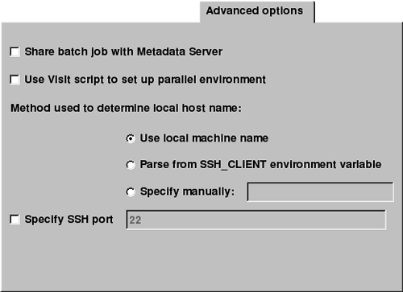

Host profiles contain the information that VisIt needs in order to successfully launch VisIt components on remote computers and to make sure that they are launched with enough computing resources. Most of those properties can be set using the Selected profile and Parallel options tabs of the Host Profile Window but there is also an Advanced options tab (see figure) in the Host Profile Window that lets you specify advanced networking options to ensure that the VisIt components running on the remote computer use resources correctly and can connect back to the viewer running on your local workstation.
|  |
| Figure 7 |